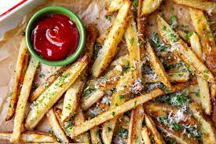

Baked French Fries

Description
This baked French fries recipe is an easy way to make a great side dish for burgers!
Ingredients
- 1 large baking potato
- 1 tablespoon olive oil
- ½ teaspoon paprika
- ½ teaspoon garlic powder
- ½ teaspoon chili powder
- ½ teaspoon onion powder